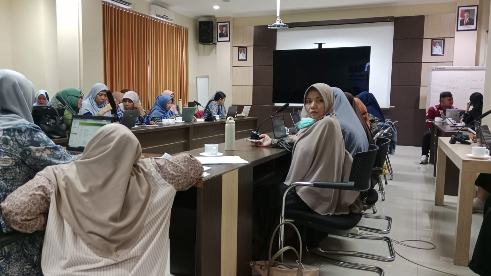

ADIWIYATA Wiyata Mandala Bpn
ADIWIYATA Wiyata Mandala Bpn
ADIWIYATA Wiyata Mandala Bpn
ADIWIYATA Wiyata Mandala Bpn
Pohon & Tanaman
% Daur Ulang Sampah
Kader Adiwiyata
Target Capaian
Program Adiwiyata di SMP Wiyata Mandala Balikpapan bertujuan untuk membentuk warga sekolah yang bertanggung jawab dalam upaya perlindungan dan pengelolaan lingkungan hidup melalui tata kelola sekolah yang baik.

Budidaya tanaman hias, toga, dan pemeliharaan keasrian area belajar terbuka.
Pemilahan sampah organik & anorganik serta kreasi daur ulang siswa.
Kampanye hemat air, pemanfaatan cahaya alami, dan pengurangan plastik sekali pakai.
Galeri foto aksi nyata warga sekolah menjaga lingkungan
Unduh file administrasi, laporan, dan panduan Adiwiyata sekolah
PDF • 1.2 MB